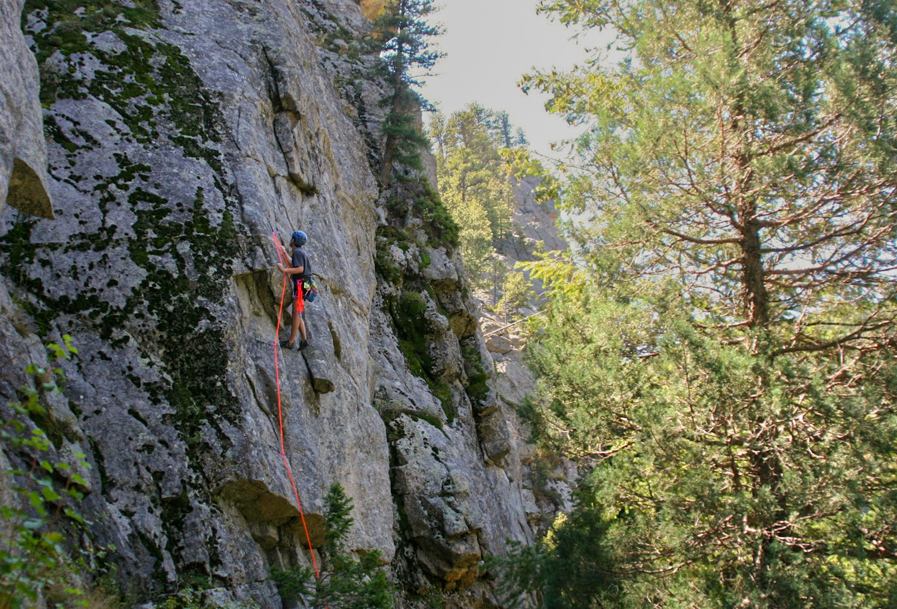
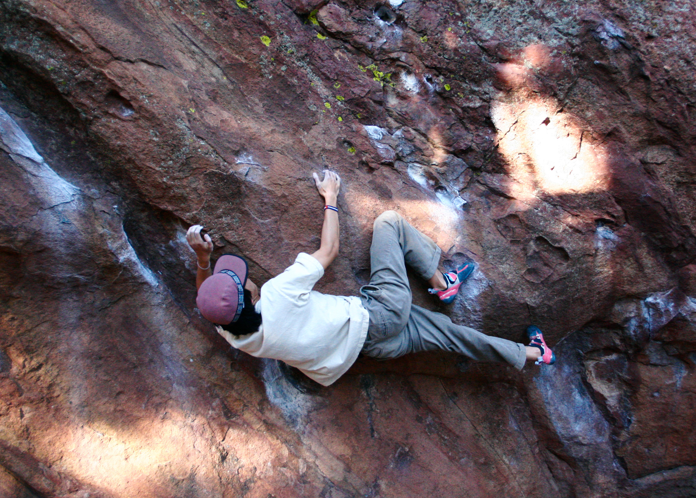

Climbing
These are 3 photos from my climbing adventures
 
Here is some chatGPT placehoder text :O Climbing photography is rewarding because it captures moments of intensity, movement, and exposure that few people ever witness firsthand. It challenges you to think creatively while working in dynamic, sometimes unpredictable environments. Getting the perfect shot often requires patience and positioning, which makes the final image feel earned rather than accidental. The result is a powerful blend of adventure and storytelling that preserves both the scale of the landscape and the determination of the climber.